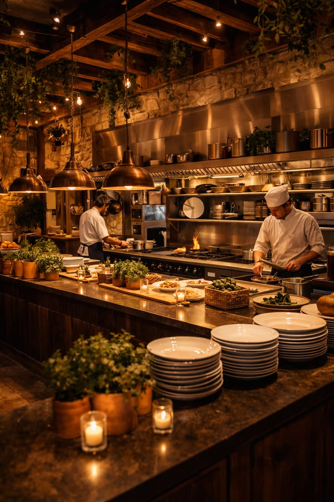
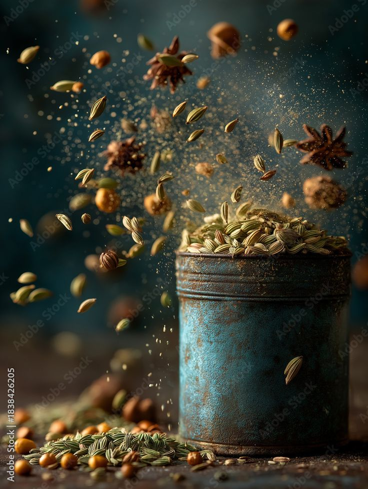
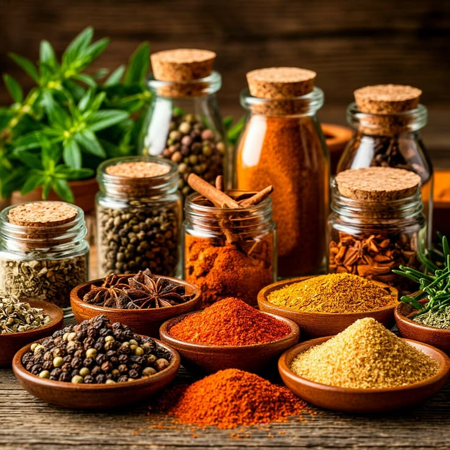

MASTER BLENDER
Traditional Blending
Combining time-honored techniques to create authentic flavors.
At AromaticRoots, every spice tells a story of heritage, authenticity, and unforgettable flavor. We bring the rich aroma of traditional Indian spices to your kitchen, making every meal a celebration of taste.
Discover Our Journey
At AromaticRoots, we believe that exceptional flavor begins long before a spice reaches your kitchen. It begins with nature, grows through tradition, and comes alive in every carefully prepared meal.
Our philosophy is simple: preserve the natural character of every spice. From the earthy warmth of cumin to the rich fragrance of cardamom, each ingredient has its own story, aroma, and purpose. We celebrate these natural qualities instead of masking them.
Inspired by India's rich culinary heritage, we value the traditional knowledge passed down through generations. We believe that the right balance of spices can transform everyday cooking into something deeply memorable.
We choose quality over shortcuts, authenticity over excess, and flavor that feels true to its roots. Every blend reflects our respect for nature, our love for traditional cooking, and our commitment to bringing honest spice experiences into your home.
Celebrating the natural aroma and character of spices.
Honoring the culinary heritage behind every blend.
Meet the passionate people behind our signature flavors, preserving tradition and crafting extraordinary spice blends.
Combining time-honored techniques to create authentic flavors.

Balancing aroma, heat and taste in every carefully crafted blend.

Keeping generations of culinary knowledge alive through spices.

Choosing carefully sourced ingredients for consistent quality.

Discovering exciting combinations inspired by kitchens worldwide.

Protecting the natural fragrance and character of every spice.
Great flavor begins long before spices reach your kitchen. At AromaticRoots, every spice tells a story of its origin, careful selection, and traditional craftsmanship. We carefully select spices for their distinctive aroma, natural color, authentic taste, and dependable quality. Every detail matters in bringing rich, memorable flavors to your everyday cooking.
Celebrating natural ingredients and authentic flavors that bring every recipe to life.
Thoughtfully sourced spices selected for quality.
Distinctive fragrance that enhances every dish.
Beautiful natural colors that enrich your cooking.
Careful selection with attention to every detail.
Honest ingredients, authentic flavors, and a natural promise that brings the richness of nature into your kitchen.
 01
01
We celebrate the traditional character of carefully selected spices and ingredients for genuine flavor.
 02
02
Discover the natural colors, distinctive aromas, and rich character that make every spice special.
 03
03
Every selection reflects our commitment to thoughtful sourcing, consistency, and memorable kitchen experiences.
Discover the journey behind every spice, from carefully selected origins to the flavors that reach your kitchen.

Closer to Nature A journey guided by care, quality, and tradition.
We value the journey behind every ingredient. Each stage represents our focus on thoughtful sourcing and quality.
We seek ingredients from suitable growing regions, with attention to their origin and quality.
Harvesting and handling help preserve the natural character of each selected ingredient.
Ingredients are selected with care to support consistency, aroma, and authentic flavor.
Our sourcing journey brings carefully chosen ingredients closer to your everyday cooking.
Everything you need to know about our spices, sourcing, freshness, and delivery.

Authentic flavor, naturally
We focus on carefully selected spices, distinctive aromas, and authentic flavors to bring more character to everyday cooking. Product details help you understand each spice before you buy.
Keep spices in airtight containers in a cool, dry place away from direct sunlight, heat, and moisture. Always close the package securely after use.
Use a clean, dry spoon, avoid introducing moisture, and store spices away from your stove. For the best flavor, follow the storage advice and best-before date on the product packaging.
Available varieties depend on our current collection. Please check the product listings for the available whole spices, ground spices, blends, and package sizes.
Explore each product description for its flavor profile and suggested uses. Start with a small quantity, taste as you cook, and adjust according to your recipe.
Please review the shipping, delivery, and return policies on our website for current service areas, estimated delivery times, and eligibility details.
Discover carefully selected spices and aromatic blends that bring warmth, character, and authentic flavor to every meal.
Explore Our Collection